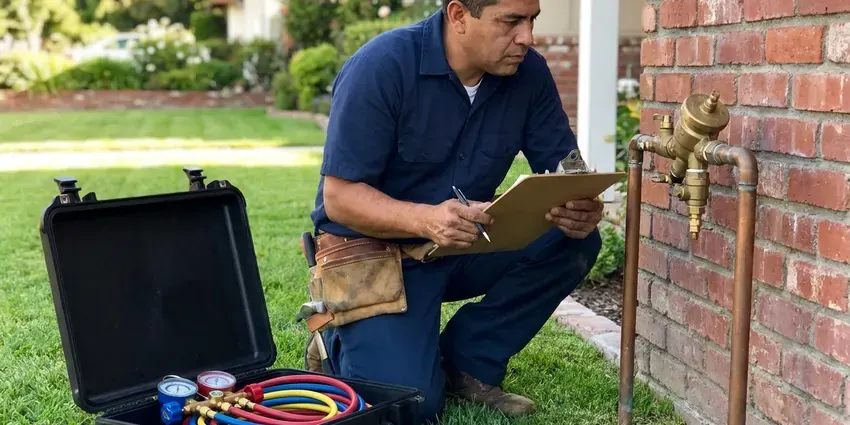

Clogged Sewer Line in Shoreline, WA
Every drain slow at the same time is not a coincidence. Something is blocking the main line. We clear sewer clogs in Shoreline, WA the same day.
- 24 Hour Backup Response
- Clearing Warranty
- Spill Area Cleaned
- Root Cutting and Hydro Jetting

Sewer Backing Up in Shoreline, WA?
We clear the line, then show you the camera footage before we talk about any repair.
When the Main Line Backs Up in Shoreline, WA
FHN Plumbing clears clogged sewer lines across Shoreline, WA, often the same day you call. Backups are messy. We protect your floors, open the cleanout carefully because the line may be holding pressure, then run a heavy cable to the street connection.
Some of what we do:
- Scheduled maintenance for root-prone lines
- Line locating to mark breaks and bellies from above
- Clearing through a vent or toilet when no cleanout exists

Additional Plumbing Maintenance Services in Shoreline, WA
Our maintenance and specialty plumbing services in Shoreline, WA catch small problems before they become emergencies.


Customers
Why Choose FHN Plumbing for Clogged Sewer Line in Shoreline, WA?
Our trucks carry commercial sewer machines, not rental units. That makes a difference. A heavy sectional machine with the right root cutter gets through roots that would stop a light machine cold, and a jetter handles the grease and scale the cable leaves behind.
- After-Hours Help, We respond to backups nights and weekends.
- Camera Proof, You see the inside of your sewer line on screen before any repair decision.
- Heavy Equipment, Commercial sewer machines and jetters clear root mats and grease plugs that rental units cannot.
Citywide Coverage
We clear sewer lines across Shoreline, from older blocks with clay and cast iron to newer subdivisions with PVC. Each needs different gear. Our trucks carry long cables and jetter hose, so we can reach a main that runs a hundred feet or more out to the street tap.
Experienced Team
Every tech is trained on sectional machines, jetters and inspection cameras. Old pipe gets care. They know how to work around old clay and Orangeburg fiber pipe, so a cleaning does not turn into an excavation.
Safety-First Approach
Your home gets protected while we work. Floors are covered first. Any fixture we pull gets reset with a new wax ring, while cables are cleaned as they come out.
Trusted Certified Shoreline Plumbing Services Professionals
At FHN Plumbing, we are proud to offer certified plumbing services throughout Shoreline, WA. Credentials matter in this trade. Our plumbers hold recognized industry credentials, and they follow strict safety and quality rules on every repair, installation and maintenance call we run.
Call Us Now PHCC Plumbing Contractor Recognition
PHCC Plumbing Contractor Recognition Better Business Bureau (BBB) Accreditation
Better Business Bureau (BBB) Accreditation Angi Certified Pro
Angi Certified Pro ISO 9001 Quality Management Certification
ISO 9001 Quality Management CertificationWhat Our Sewer Line Service Covers in Shoreline, WA
Sewer Camera Inspection in Shoreline
A sewer camera is a waterproof head on a push rod with a locator transmitter built in. It shows us everything. Cracks, offsets, sags, roots and heavy scale all show up on the screen, and the transmitter lets us mark the exact spot and depth on the ground above it. That keeps digging to a minimum. You get a copy of the footage.

Emergency Sewer Backup Service in Shoreline, WA
Sewage coming up through a shower or floor drain needs attention right away. Turn off anything draining. Our emergency crews stop the backup, clear the main and help with cleanup referrals. We document it for your claim.
Main Line vs. Branch Line Clogs in Shoreline, WA
One slow drain is a branch clog. More than one usually means the main. Water rising in the shower when you flush is a strong sign the clog is past the point where those two lines join, so the pattern of slow drains tells us where to go in. Starting in the right place matters.
Grease and Sludge Buildup Removal in Shoreline, WA
Kitchen grease cools in the sewer line and sticks to the walls. Then it grows. Soap scum and food bind to it until the opening shrinks to a fraction of the pipe, and at that point even normal use backs the line up into the lowest fixture in the house. FHN Plumbing jets it out with a grease nozzle in Shoreline, WA. Then we show you on camera.
Main Line Hydro Jetting in Shoreline
A jetter cleans the full diameter of the pipe, not just a hole through the middle. That matters a lot. Water at thousands of psi cuts roots, grease and scale, and the rear-facing spray carries all of it downstream as the nozzle pulls itself along the line. We camera the pipe first so jetting only goes into lines that can take it. Results often last years.
Cleaning vs. Repairing a Sewer Line in Shoreline, WA
A sound pipe with a grease or root clog just needs cleaning. Cracked pipe is different. Offset joints, cracks and collapsed sections keep clogging no matter how often they get cleared, so the camera footage decides whether you spend a few hundred dollars on cleaning or more on a spot fix, liner or replacement. We walk you through it.
Emergency Clogged Sewer Line Repair in Shoreline, WA
Sewage backing up into the house is an emergency. Stop using water right away. FHN Plumbing answers after hours in Shoreline, WA and sends a tech with a sewer machine, a jetter and the gear to contain the mess and disinfect the area once the line is open.

Tree Root Sewer Clogs in Shoreline
Clay and older cast iron sewer pipe have a joint every few feet. Each joint is an opening. Roots from trees and shrubs push into the gaps and fill the pipe, then we cut them out and camera the line for damage. Ongoing root problems may call for a treatment schedule or lining.
A Sewer Technician Near You in Shoreline, WA
Our sewer techs work Shoreline every day. They know the local pipe. Blocks with clay laterals and big trees see root clogs every year, and newer ones clog from grease, so we bring the right tools.
People in Shoreline call us for the same few reasons: roots, grease, wipes, a sagging pipe. They come up all the time. Each call starts with a few questions about which drains are affected, because that tells us whether the clog is in the main or a branch before we ever open a cleanout.
FHN Plumbing at a Glance
- Licensed and insured plumbers serving Shoreline, WA
- Same-day appointments and 24/7 emergency response
- Upfront, flat-rate pricing before work begins
- 4.9-star rated by 382+ Washington customers
Shoreline Map
Shoreline Information
- Population
- 61,353
- Area codes
- 206/425/564
- Service area
- Shoreline and towns within a 40 mile drive
- Nearby
- Bothell, Kirkland, Seattle, Redmond
Older sewer laterals in Shoreline, WA were laid in short sections with a joint every few feet, and every joint is a place for roots to get in.
Expert Services
Reach out to FHN Plumbing for reliable plumbing work done by licensed pros in Shoreline, WA.
Our Specialized Plumbing Services in Shoreline, WA
At FHN Plumbing, you get every kind of plumbing service from one company across Shoreline, WA. From leak detection to full system installs, our team works fast and charges fair prices on homes and commercial properties alike. Explore our core services below:


How We Clear a Sewer Line in Shoreline, WA
Here is how FHN Plumbing handles a clogged main start to finish in Shoreline, WA.
Call Us
Call FHN Plumbing at (425) 491-3131 and tell us which drains are backing up. Stop using water while you wait.
Find the Clog
The tech checks the cleanout and looks at the pattern of backups. You get a price before work starts.
Clear the Line
We clear the main with a sewer machine or jetter. A flow test proves it is open.
Frequently Asked Questions About Clogged Sewer Line in Shoreline
Most sewer clearings in Shoreline, WA cost $250 to $700. Roots add cost. Jetting, a camera inspection or a line with broken pipe costs more since it needs more work. You get the price before we start.
Usually you own the lateral. The city owns the main. Your responsibility typically runs from the house to the property line or the city tap, though the rules vary by city. Our camera and locator show where the clog is.
Multiple drains backing up at once. Gurgling toilets too. Water rising in the shower when you flush, sewer odors and a wet cleanout area point the same way. A single slow drain is usually local.
Flush only toilet paper. Wipes go in the trash. Keep grease out of the kitchen sink, plant new trees well away from the sewer line and schedule a cleaning every year or two if your home has older pipe or mature trees nearby. Enzyme products can help too.
RIDGID sewer machines and cameras do most of our work. They hold up. Our jetters are sized for residential and light commercial lines, with nozzles chosen by what the camera finds. Every machine is serviced on schedule.
We would not recommend it. It goes wrong often. A rental drum auger can kink, jam in the pipe or crack old lines, and sewage exposure is a real risk. A plumber has the right machine and protective gear.
No, not for clearing. Clearing is maintenance. A permit comes into play in Shoreline, WA if the job turns into a repair or replacement, especially any excavation or pipe replacement. We handle permits if that happens.
Probably not. Rental augers are risky. A drum auger from the rental shop can jam, kink or crack old pipe, and a main line clog means handling sewage without the right protective gear or cleanup supplies. Calling a professional is safer and usually faster.
What Our Customers Say About Our Plumbing Experts

Daniel K.
A pipe burst in the garage ceiling at 11 at night. Someone answered on the second ring, and the plumber was in my driveway about fifty minutes later. He shut off the main, cut out the split section, and had water back on before 2 am.
Emergency Plumbing · Shoreline, WA
Patricia H.
We had a slab leak that two other companies could not find. FHN Plumbing located it in under an hour with a listening device. They rerouted the line through the attic instead of breaking up the floor, so we kept our kitchen tile.
Slab Leak Repair · Bothell, WA
Paul B.
Our pit pump ran nonstop even in dry weather. The plumber found the check valve was stuck open, so the same water kept cycling back into the pit. New valve, new float switch, done in an hour. It runs quiet now.
Sump Pump · Everett, WA
Kevin O.
Before buying our house I paid for a sewer camera inspection. FHN Plumbing found a belly in the line that held standing water about forty feet from the cleanout. We used the video to get the sellers to fix it before closing.
Sewer Camera Inspection · Redmond, WAKaren W.
After our third pinhole leak in copper, we stopped patching. FHN Plumbing gave us a written plan room by room and repiped the house in PEX while we stayed in it. The crew covered our floors every morning and cleaned up every night.
Repiping · Redmond, WA
Monica A.
Our water bill nearly doubled in one month with no change in how we used water. The tech checked the meter, heard the leak under the hallway with his equipment, and opened a hole about a foot square. Fixed the same day.
Slab Leak Repair · Redmond, WA